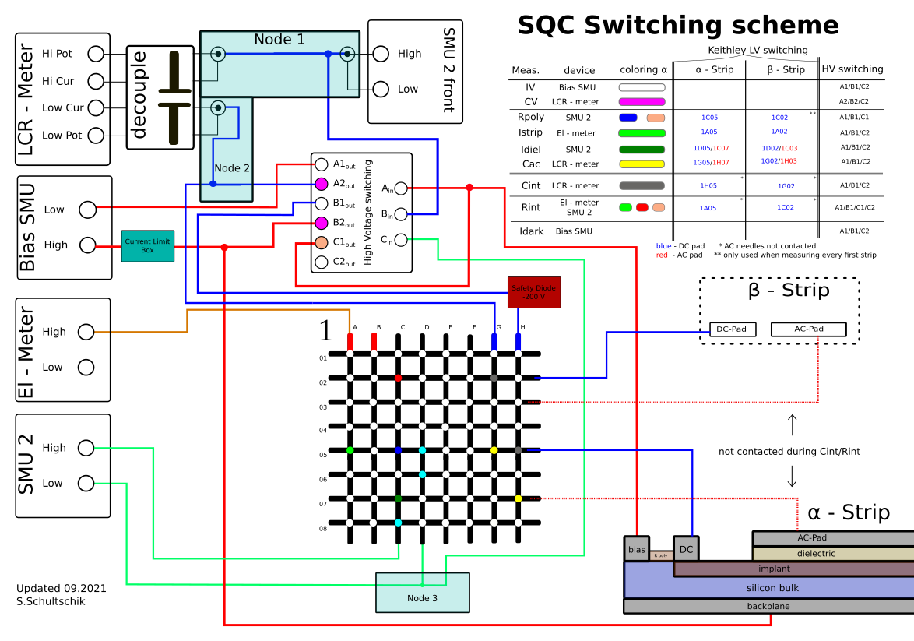

SQC
Sensor Quality Control for the CMS Tracker
Getting started
Install using pip in a virtual environment.
pip install git+https://github.com/hephy-dd/sqc.git@<version>
Then run the application from a shell.
sqc
To run only the data browser use the --browser [<path>] command line flag.
sqc --browser
The command line flag accepts an optional path to show in the data browser.
sqc --browser /home/jdoe/sqc
Configuration
When running for the first time make sure to configure the instrument settings
according to the individual setup by navigation to Edit → Resources.
Add sensor profiles by combining a sequence file and a sensor pad file by
navigating to Edit → Sensor Profiles.
Switching scheme

Safety
Warning: this software controls a highly complex, high voltage measurement setup in a laboratory environment. Always take care and double check the situation before taking actual measurements.